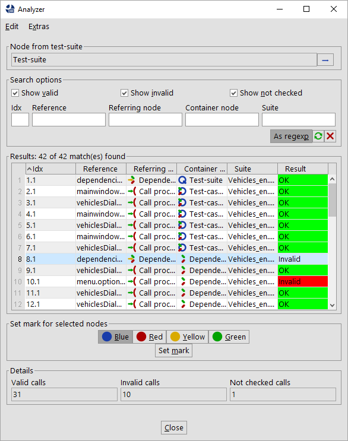

| Version 6.0.3 |
The previous chapters all focused on creating and organizing sets of reliable tests in a single test-suite. However, when testing a large application, a single suite may not be enough. There are at least two scenarios where splitting tests into multiple test-suites becomes essential:
QF-Test provides a set of advanced features that make it possible to split and arrange tests across a set of test-suites. Multiple developers can work on separate parts of a test, then coordinate their efforts, merge the 'Components' of their suites and create libraries of shared 'Procedures'.
This chapter first explains the various mechanisms for distributed test development and how they interact. The final section then summarizes these in concise step-by-step instructions on how to approach large testing efforts with QF-Test.
It is possible to reference 'Procedures' and 'Components' in a test-suite other than the current one. These references can be explicit or implicit through included files:
packagepath.procedure becomes
suite#packagepath.procedure.
A test-suite that references a node in another test-suite becomes dependent on that suite. If the 'Name' of a 'Procedure' or the 'QF-Test ID' of a 'Component' in the referenced suite changes, the suite with the reference must get updated, otherwise the link is broken and the suite will no longer work correctly. In such cases QF-Test will automatically update references if it knows about them. The best way to ensure that is to have both test-suites in a common project because QF-Test automatically tracks all includes and all explicit references within a project. Alternatively you can list the calling suite in the 'Dependencies (reverse includes)' attribute of 'Test-suite' root node of the referenced suite.
While implicit references are more convenient in most cases, they can make tests harder to understand because it is not immediately obvious where the 'Procedure' or 'Component' referenced by some node is actually located. One possibility to find out is to select "Locate procedure" ([Ctrl-P]) or "Locate component" ([Ctrl-W]) from the context menu. Additionally, QF-Test provides the menu items »Operations«-»Make references explicit« and »Operations«-»Make references implicit« which let you toggle quickly between the two modes without changing the actually referenced nodes.
In both cases, the referenced suite can either be given a relative or absolute filename. Relative filenames will be resolved relatively to the directory of current suite, or - if that fails - relatively to the directories on the library path (see option Directories holding test-suite libraries). Always use the forward '/' as the directory separator, even under Windows. QF-Test will map it to the correct character for the system it runs on. This keeps your test-suites independent from the operating system.
Note Your 'Package' and 'Procedure' names as well as 'Component' 'QF-Test IDs' should not contain any '\' or '#' characters. If they do, you need to include an escape character in the 'Procedure call' or the 'QF-Test component ID' attribute. See section 45.5 for details about escaping and quoting special characters.
When choosing the 'Procedure' for a 'Procedure call' or the 'Component' for some event in the dialog, QF-Test offers a selection of all currently opened test-suites. If a 'Procedure' or 'Component' from another test-suite is selected, QF-Test automatically creates the correct reference, taking included suites into account. When the test is run at a later time, the referenced test-suite is loaded automatically if necessary.
During execution QF-Test keeps a stack of currently executing suites. Whenever a 'Procedure' is called in another suite, the called suite is pushed on to the top of this stack and removed when execution returns to the calling suite. Whenever during the execution of a 'Procedure' a 'Window' or 'Component' is referenced by its QF-Test ID, QF-Test searches through this stack of suites from the top to the bottom, i.e. first in the test-suite of the called 'Procedure' and then in the calling suite, always checking any included files along the way. This process is quite complicated and you should take care to keep your include hierarchies simple. In case you encounter problems anyway, a detailed explanation is given in section 45.6.
As we have emphasized in chapter 5, the 'Components' are the essential part of a test-suite. If the SUT changes between releases, these will likely be affected most. If changes are so massive that QF-Test cannot adapt automatically, the 'Components' will have to be updated manually. This is why you should try to avoid redundancy in the 'Component' hierarchy of your tests more than in any other part.
Therefore, when splitting your tests across multiple test-suites you should try to keep the 'Components' together in one central test-suite and include this suite from the other suites. For very large applications you may want to split the 'Component' hierarchy into parts, each related to a separate part of the SUT's GUI.
Maintaining this central 'Component' library is not trivial. The problems that will arise can be resolved with QF-Test as follows:
Test-suites can be merged by importing one test-suite into another with the »File«-»Import...« menu item.
You can select the areas of the test-suite, which should be imported.
You have to take care about a correct Include/Reverse-Include of your test-suites to ensure, that all calls and component references are still valid. See chapter 33 for details.
During import, all 'Windows' and 'Components' of the imported test-suite are integrated into the component hierarchy of the importing suite. 'Components' that already exist are not copied. A 'QF-Test ID' conflict (identical components with different 'QF-Test IDs' or differing components with identical 'QF-Test IDs') is resolved automatically by changing the 'QF-Test ID' of the imported component.
Afterwards, all 'Windows' and 'Components' are removed from the imported suite. All nodes in the imported suite that referred to these 'Components' are updated accordingly. Ideally, the imported suite should include the importing suite so no explicit suite references will have to be created.
As you can import 'Components' QF-Test also allows to import 'Procedures', 'Packages', 'Dependencies' and 'Test-cases' as well as 'Test-sets' by choosing 'Procedures' or 'Tests' in the import dialog. You should take care about keeping all calls consistent, e.g. in most cases it does not make sense to import 'Procedures' without their required 'Components'.
In case you only want to import one dedicated 'Procedure' or 'Test-case' you can use the button 'Detailimport' on the importdialog. Here you can choose any node you want to import separately.
There is no single best way of test development or organization, but one approach that works well is the following:
setName() and that unique names
are assigned consistently where needed. Where setName()
is not an option, try to implement
ComponentNameResolvers to achieve this (see subsection 50.1.6). You should be able to record and replay
sequences without much ado and without "polluting" the
'Component' hierarchy after trivial changes in the user
interface.
Of course, the above scheme can be extended to have several master suites for testing different parts or aspects of an application. It may be a good idea to ensure that the component hierarchies in these suites don't overlap too much though. This will save you the effort of maintaining all these hierarchies in case the user interface of the SUT changes significantly.
Working in a project over time will cause modifications, refactoring or deletion of steps in your test-suite structure, e.g. you may consider renaming 'Procedures' or simply removing them once they are not required anymore.
In such cases it is quite important that you adapt all references of the according 'Procedure' in order to guarantee that the remaining tests keep running. For this purpose QF-Test automatically updates all references during the process of renaming or moving elements on demand.
If you want to ensure that your created test structure doesn't contain any call of non-existing 'Procedures' anymore, you can also use the "Analyze references" command of QF-Test in order to perform a static validation of your test-suite. This command will open a dialog showing all references and whether they are still okay or something is missing.
You can trigger the analysis via a right mouse-click and selecting »Additional node operations«-»Analyze references...« or selecting the according entry from the main menu under »Operations«. This method is also available in batch mode.
|
|  | ||
|
| Figure 23.1: Result of analyzing references | ||
3.5+ QF-Test also provides features to search through your test-suites for duplicate nodes, empty 'Packages' or 'Procedures' or to analyze for nodes having invalid characters in their names.
This kind of static validation is available for 'Procedures', 'Dependencies', 'Test-cases', 'Test-sets' and 'Components' and their references.
During test development it could happen that procedures, which were used in the first version of your tests will not be used in newer versions due to re-factoring of tests. If those procedures won't get deleted immediately they will stay in the test-suite and the test-suite will grow and grow. Sometimes you could get the feeling that you have too many procedures or that you have lost the overview of your procedures. In order to check for such unused procedures or dependencies in your test-suite you can open the context menu via a right mouse click at 'Test-suite' or 'Procedures' and select »Additional node operations«-»Find unused callables...«. This operation creates a report showing any procedures or dependencies which had been created but haven't been used yet. Now you could decide what you want to do with those.
Sometimes you might simply remove all of those unused nodes immediately via »Additional node operations«-»Remove unused callables«.
| Last update: 9/6/2022 Copyright © 1999-2022 Quality First Software GmbH |